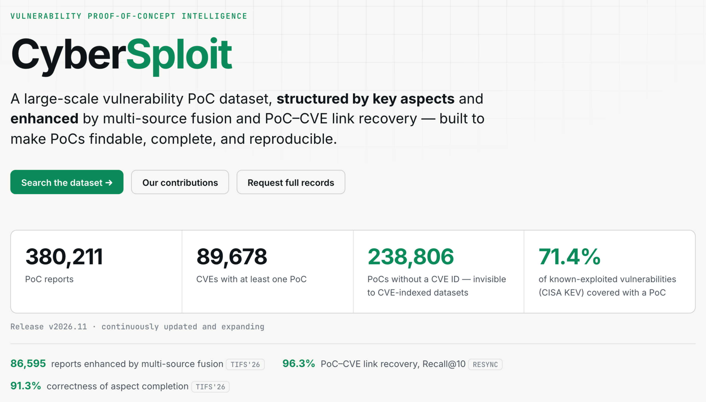
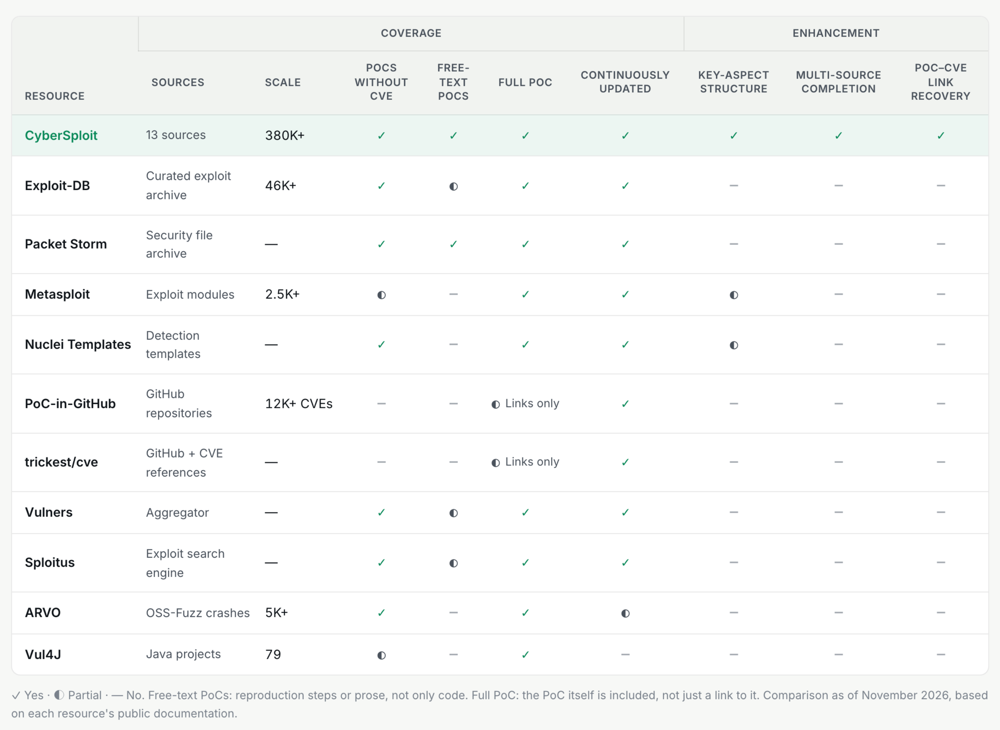
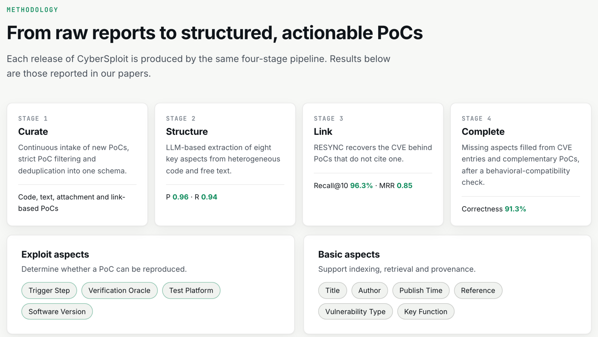
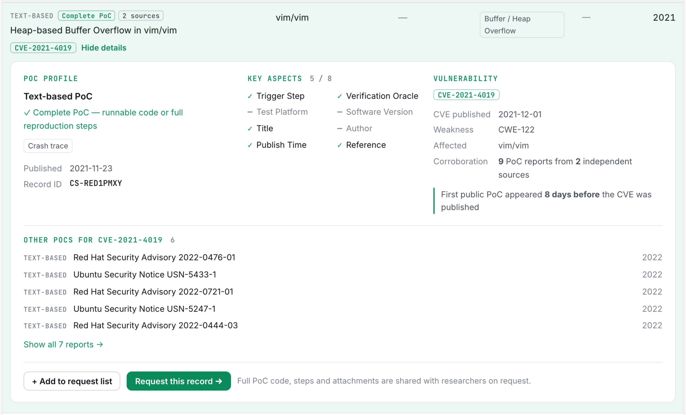
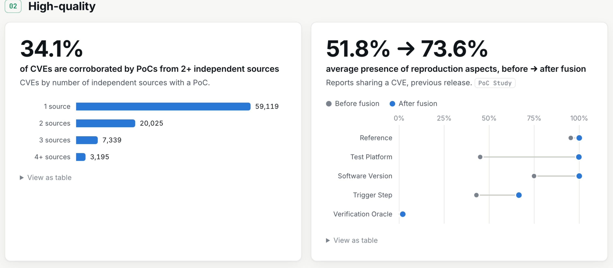
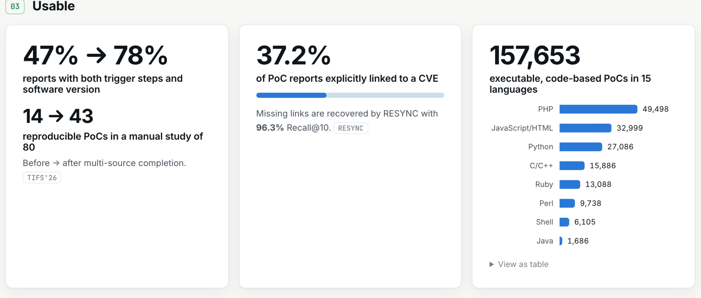
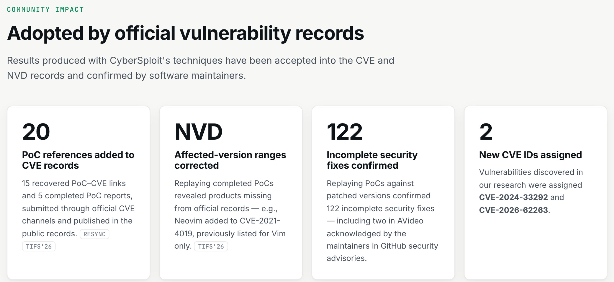
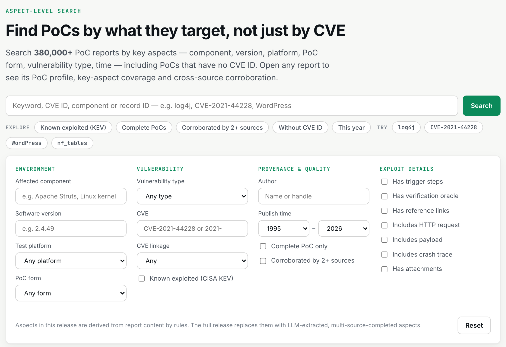
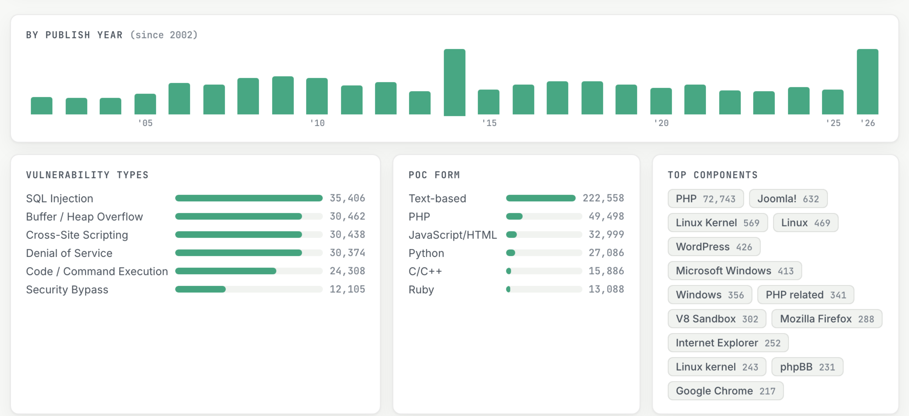
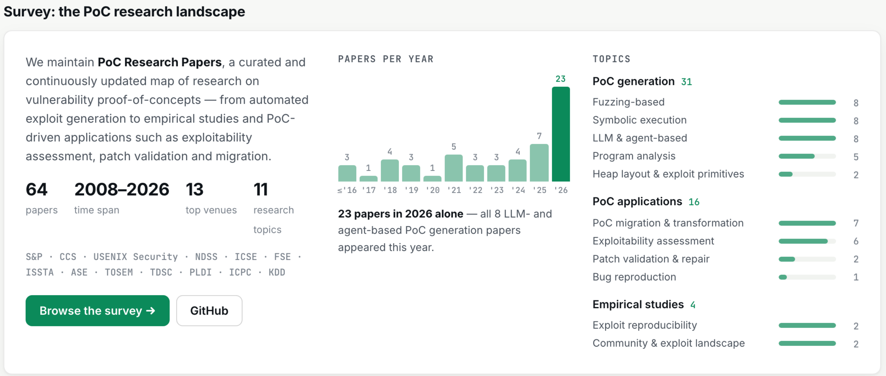

本文看点
01
六成PoC没有CVE编号
02
跨源补全可复现翻三倍
03
重放PoC查出122个漏修
01
PAPER INFO
论文信息
【项目名称】CyberSploit: A Large-Scale Multi-Source Vulnerability PoC Dataset
【论文链接】https://dangwenjing.github.io/Cybersploit
【作者团队】天津大学、南开大学、南洋理工大学（党文婧、张吕晔、王凌霄、李凯旋、赵梦瑶、李晓红、陈森等，刘杨教授参与指导）
【发表情况】核心方法见 IEEE TIFS 2026「Synchronizing Key Aspects: Enhancing Vulnerability PoC Reports From Multiple Sources」与 FSE 2025 Companion；数据集当前为 v2026.11 版，持续更新
【数据获取】检索与元数据公开；完整 PoC 代码、复现步骤与附件面向研究者申请，仅限研究与防御用途

— CyberSploit 网站首页
02
OVERVIEW
导读
漏洞的概念验证（Proof-of-Concept，PoC）是安全工作里最「硬」的一类证据：漏洞是不是真的、影响到哪些版本、补丁到底修没修好，最后都要靠一份能跑起来的 PoC 来回答。可真要用的时候，PoC 往往很难找：它们散落在 Exploit-DB、Packet Storm、缺陷追踪系统、厂商公告、邮件列表和 GitHub 仓库里，格式五花八门；很多根本没标 CVE 编号，按 CVE 去搜就找不到；找到了也常常缺触发步骤、缺测试环境、缺受影响版本，照着做复现不出来。
天津大学、南开大学和南洋理工大学的研究者把这几年在 PoC 方向的工作，汇成了一个公开的数据集和检索网站：CyberSploit。当前版本的规模是：
38 万多份 PoC 报告（380,211 份），来自 13 个公开来源，外加团队在研究中自研的 PoC；
覆盖 8.9 万多个 CVE（89,678 个），涉及 3,917 个厂商、10,258 个产品、569 类 CWE；
其中 23.9 万份没有 CVE 编号（238,806 份），占六成以上；
CISA 已知被利用漏洞（KEV）目录中，1,790 个 CVE 里有 1,278 个能找到 PoC，覆盖率 71.4%；
15.7 万份是可执行的代码型 PoC，覆盖 PHP、JavaScript/HTML、Python、C/C++、Ruby 等 15 种语言，其余是复现步骤、请求报文这类文本型 PoC。
光是「收得全」并不稀奇。这个数据集真正值得讲的，是它在收集之后做的三件事：把每份报告拆成要素、给没编号的 PoC 找回 CVE、用同一漏洞的其他来源补全缺失信息。下面重点讲这三件事各自为什么必要、怎么做、效果如何。
03
DIFFERENCE
和已有 PoC 资源差在哪

— 图1：CyberSploit 与 10 个现有 PoC 资源的对比。左半是覆盖面，右半是增强能力；✓ 为支持，半圆为部分支持，横线为不支持
现有资源大致分三类，各有一个绕不开的短板：
单平台档案库，如 Exploit-DB（4.6 万多份）、Packet Storm、Metasploit（2,500 多个模块）、Nuclei Templates。PoC 本体都在，但只覆盖自家平台，而且都是原样存放，没有结构化。
以 CVE 为索引的聚合，如 PoC-in-GitHub、trickest/cve。它们按 CVE 去 GitHub 上找仓库，天然漏掉所有没标 CVE 的 PoC，而且只存链接不存 PoC 本体，仓库一删就断。
研究型数据集，如 ARVO（5,000 多个 OSS-Fuzz 崩溃）、Vul4J（79 个 Java 漏洞）。质量高、可复现，但规模小、领域窄。
CyberSploit 的定位是把这三类的长处拼起来：多源、收录无 CVE 和文本型 PoC、保留 PoC 本体、持续更新。对比表右侧三列（要素结构化、多源补全、PoC–CVE 关联恢复）是其他 10 个资源都没有的，这也是它和「又一个漏洞库」的区别所在。
04
PIPELINE
从原始报告到能用的 PoC

— 图2：每个版本的数据都由同一条四阶段流水线产出：收集、结构化、关联、补全。下方是 8 个关键要素的分组
第一步：收集与去重。 13 个来源的漏洞库条目、技术公告、缺陷报告、邮件讨论和代码仓库被统一进同一套数据模型。这里有个关键决定：没有 CVE 编号的 PoC 不丢，同样入库、同样可检索。很多聚合工具的第一步就是按 CVE 过滤，这一步下去，六成 PoC 就没了。
第二步：拆成 8 个关键要素。 一份 PoC 报告能不能用，取决于几样具体信息在不在。CyberSploit 把它们分成两组：
利用要素（决定能不能复现）：触发步骤（Trigger Step）、验证条件（Verification Oracle，即怎么判断触发成功了）、测试平台、软件版本；
基本要素（决定能不能被找到和溯源）：标题、作者、发布时间、参考链接，以及漏洞类型、关键函数。
不管原报告是代码还是一段自然语言，都用大模型抽成这几个字段，抽取精确率 0.96、召回率 0.94。拆开之后，检索就不再只能靠 CVE 编号，可以按「组件是 Apache Struts、版本 2.5.x、平台 Linux、有触发步骤」这样组合条件去找。
第三步：给没编号的 PoC 找回 CVE（RESYNC）。 这是整条流水线里最难的一步，后面单独讲。
第四步：跨源补全。 同一个漏洞往往有好几份 PoC，分别来自不同平台，各缺各的信息。补全就是拿 CVE 记录和同一漏洞的其他 PoC 去填当前报告缺的要素。目前已有 86,595 份报告得到补全，补全正确率 91.3%。
05
FINDING 1
六成 PoC 没有 CVE 编号，问题出在时间差
先看一个数：在 38 万份报告里，显式标了 CVE 的只有 37.2%。
为什么这么多 PoC 没编号？最主要的原因是时间顺序。PoC 经常比 CVE 先出现：研究者在 huntr、GitHub Issue、邮件列表里报告漏洞时附上复现步骤，CVE 要等几天甚至几周后才分配下来，而原帖不会回头补编号。网站上能直接看到这样的例子：vim 的堆溢出漏洞 CVE-2021-4019，第一份公开 PoC 比 CVE 发布早了 8 天（PoC 2021-11-23，CVE 2021-12-01）。

— 图3：vim 漏洞 CVE-2021-4019 的报告详情。左为 PoC 画像，中为 8 个要素中具备哪些，右为漏洞信息和多源佐证；下方列出同一漏洞来自其他来源的 6 份报告
这就带来一个实际后果：以 CVE 为索引的资源，天然看不见这六成 PoC。 防守方想知道「某个 CVE 有没有公开 PoC」时，查 PoC-in-GitHub 之类的工具得到「没有」，并不代表真的没有，可能只是那份 PoC 发在了一个没标编号的地方。
RESYNC 要解决的就是这个关联问题：给一份没写 CVE 的 PoC，从几十万个 CVE 里找出它对应的那个。难点在于，PoC 和 CVE 描述的往往是同一件事的两个侧面：PoC 写的是「往某个参数塞一段超长字符串，程序崩在某个函数」，CVE 写的是「某产品某版本之前存在堆溢出」，字面上几乎不重合。RESYNC 的做法分三层：
先用第二步抽出的要素（组件、版本、漏洞类型、关键函数）建一个要素引导的知识图谱，把 PoC 和 CVE 放到同一套概念上对齐；
再自适应筛选候选，把几十万个 CVE 缩到一个小集合；
最后用大模型做语义重排序，判断哪个 CVE 和这份 PoC 描述的是同一个缺陷。
效果是 Recall@10 为 96.3%、MRR 为 0.85，比基线方法高 1.2 到 3.9 倍。MRR 0.85 意味着正确答案平均几乎排在第一位，这个精度已经能直接用来给官方记录提交补充：团队通过 CVE 官方渠道提交的 PoC 引用里，有 15 条就来自 RESYNC 恢复的关联，已经出现在公开的 CVE 记录中。
06
FINDING 2
跨源补全让可复现 PoC 翻了三倍，但有一样东西补不出来
补全的思路很直接：A 平台的报告有触发步骤但没写版本，B 平台的公告写了受影响版本但没给步骤，合在一起就是一份完整的 PoC。但这里有个陷阱：同一个 CVE 下的两份 PoC，不一定在描述同一种触发方式。 一个漏洞可能有多条触发路径，把 A 的步骤和 B 的环境硬拼在一起，可能得到一份谁都复现不了的「缝合报告」。所以 CyberSploit 只在两份报告行为上互补时才融合，先做一次兼容性检查，确认它们描述的是同一个触发行为，再互相填空。

— 图4：多源融合前后，同一 CVE 下报告的复现要素覆盖率（灰点为融合前，蓝点为融合后）
融合的效果按要素看差别很大：
测试平台从不到一半补到接近 100%，软件版本从七成多补到接近 100%：这两样信息在厂商公告和 CVE 记录里通常写得很全，正好能填给只有代码的 PoC；
触发步骤从四成多提到近七成：只要同一漏洞的某个来源写过步骤，就能补过来；
验证条件融合前后都接近 0。
最后这一条最值得注意。验证条件回答的是「怎么判断攻击成功了」：程序崩溃、返回了某个特征字符串、拿到了更高权限。几乎没有哪个来源会把这一点写下来，所以无论融合多少份报告都补不出来。 这也解释了为什么团队把「验证条件合成」列为下一步的开放方向：它不能靠搬运，只能靠推断或实际运行来生成。
整体上，补全把同时具备触发步骤和软件版本的报告从 47% 提到 78%，复现要素的平均覆盖率从 51.8% 提到 73.6%。最有说服力的是人工复现实验：随机取 80 份 PoC，补全前能直接复现的只有 14 份，补全后是 43 份，翻了三倍。基于要素的检索 Hit@10 也从 0.66 升到 0.88。反过来看，补全后仍有 37 份复现不了，说明缺要素之外，还有环境搭建、依赖版本这些更难的问题在挡着。

— 图5：可用性指标。左为补全前后的变化，中为显式关联 CVE 的报告占比，右为代码型 PoC 的语言分布
07
FINDING 3
PoC 能反过来查出官方记录的错漏
一份补全好的 PoC 不只是「能复现」，它还能拿来做验证：在别的版本、别的产品上重放一遍，看漏洞还在不在。团队用这个思路得到了几类实际成果：

— 图6：被 CVE/NVD 官方记录采纳和维护者确认的成果
补全受影响范围：Neovim 是从 Vim 分叉出来的，共享了大量代码。重放 CVE-2021-4019 的补全版 PoC，发现 Neovim 同样中招，但官方记录里原本只列了 Vim。这个修正已进入 NVD 记录。分叉项目继承了漏洞却不在通告里，下游用户就收不到预警，这是软件供应链里很典型的一类盲区。
确认不完整修复：在已打补丁的版本上重放 PoC，漏洞照样能触发，说明补丁没修全。用这种办法确认了 122 个不完整的安全修复，其中 AVideo 的两个已由维护者在 GitHub 安全公告中确认。
完善 CVE 记录：向 CVE 官方记录补充了 20 条 PoC 引用，包括 15 条 RESYNC 恢复的关联和 5 份补全后的 PoC 报告。
新漏洞：研究中发现的漏洞获批 CVE-2024-33292、CVE-2026-62263。
这几条说明，PoC 数据集的价值不止于「查」，结构化之后它可以变成一个批量验证工具：对着补丁版本和下游分叉批量重放，直接产出可提交给维护者和 CVE 的证据。
08
USAGE
怎么用

— 图7：检索页。可按关键词、CVE、组件、版本、平台、PoC 形式、漏洞类型、作者、时间组合筛选，右侧可勾选是否有触发步骤、验证条件、HTTP 请求、payload、崩溃栈、附件
网站提供面向要素的检索，检索页只展示公开元数据，不展示 PoC 正文：
多入口检索：关键词、CVE 编号、组件名、记录编号都能搜，还能叠加组件、版本、平台、PoC 形式、漏洞类型、作者、时间等条件；
质量筛选：一键筛 KEV 漏洞、完整 PoC、两个以上来源佐证、无 CVE 编号；
结果分布：实时给出结果的年份分布、漏洞类型、PoC 形式和热门组件，点击即可继续筛；
报告详情：展开任一报告，能看到 PoC 画像、8 个要素具备哪些、对应 CVE 的发布时间与 CWE、这个漏洞共有多少份 PoC 来自几个独立来源（见图 3）；
数据申请：完整 PoC 代码、复现步骤、验证条件和附件面向研究者开放申请，把感兴趣的记录加入申请清单一次性提交，或发邮件至 dangwenjing@tju.edu.cn 注明姓名、单位与用途。数据仅限研究与防御用途，不得再分发。

— 图8：检索结果分布。上为按发布年份，下为漏洞类型、PoC 形式与热门组件
另外，团队同步维护了一份 PoC 方向的研究综述 PoC Research Papers（marklee131.github.io/PoC-Research-Papers），整理了 2008 到 2026 年间 S&P、CCS、USENIX Security、NDSS、ICSE、FSE、ISSTA、ASE 等 13 个会议和期刊上的 64 篇论文，分为 PoC 生成、PoC 应用、实证研究三大方向。仅 2026 年就有 23 篇，其中基于大模型和 Agent 的 PoC 生成论文全部 8 篇都出现在今年。

— 图9：PoC 研究综述：按年份与主题的论文分布
09
CAVEATS
值得注意的地方
公开检索页的要素是规则抽取的。 网站说明当前公开版的要素由规则从报告内容中推出，完整版才换成大模型抽取、多源补全后的要素。所以在检索页上看到的要素覆盖情况，会比论文里报告的补全后数字保守。
「PoC 报告」的口径比较宽。 22 万多份文本型报告里，包括 Red Hat、Ubuntu 这类安全公告，一份公告往往对应多个 CVE，本身未必带触发步骤。按「可直接运行的 PoC」算，代码型的 15.7 万份是更保守的口径。
复现实验样本不大。 14 到 43 的提升来自 80 份 PoC 的人工复现，方向很清楚，但放到 38 万份的规模上，具体比例还需要更大样本验证。
RESYNC 仍在审稿中。 关联恢复的 96.3% Recall@10 来自在审工作，评测细节要等论文正式发表后再看。
完整数据需申请。 PoC 本体涉及可利用代码，采用申请制而非直接下载，这是合理的取舍，但也意味着复现论文结果需要走一道流程。
10
TAKEAWAYS
启发与点评
对研究者： 做漏洞复现、可利用性评估、补丁验证或 PoC 自动生成的工作，过去常常卡在数据上：要么只用 Exploit-DB 一个来源，要么只取带 CVE 的那部分。CyberSploit 把无 CVE 的六成也纳入进来并做了结构化，一些以前没法做的问题现在有了数据基础，比如「没编号的 PoC 和有编号的在漏洞类型分布上有什么系统差异」。而验证条件几乎全缺这个发现本身就是一个好题目：它是 PoC 自动验证的前提，也是大模型生成 PoC 时最容易「自以为成功」的地方。
对从业者： 判断一个 CVE「有没有公开 PoC」时，只查以 CVE 为索引的工具会系统性低估风险，因为 PoC 经常比 CVE 先出、且不回头补编号。对于用了分叉项目的团队，Neovim 的例子也值得记住：上游的漏洞通告不一定会列出你，拿上游 PoC 在自己的分支上重放一次，比等通告可靠。
一个观察： 这个合集里之前讲过不少「用大模型生成 PoC」和「用 Agent 复现漏洞」的工作，它们的评测基本都依赖一小批手工整理的可复现样本。PoC 数据的规模化和结构化，可能是这类方法从演示走向实用的下一个瓶颈，而 CyberSploit 正好补在这个位置上。